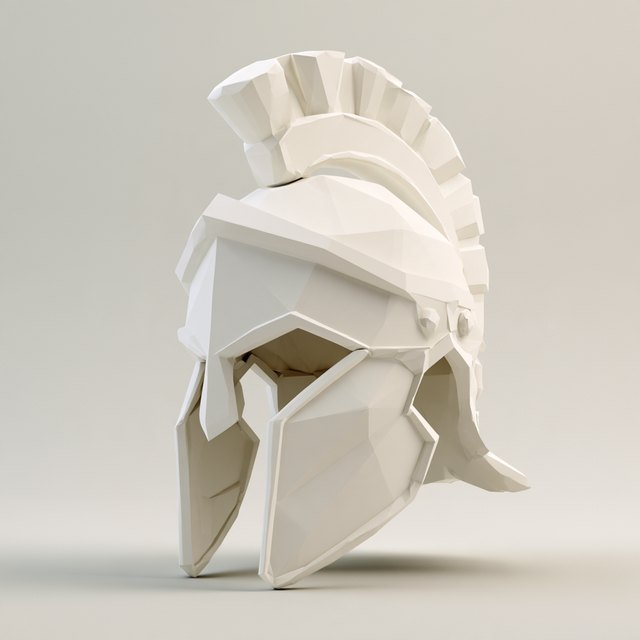
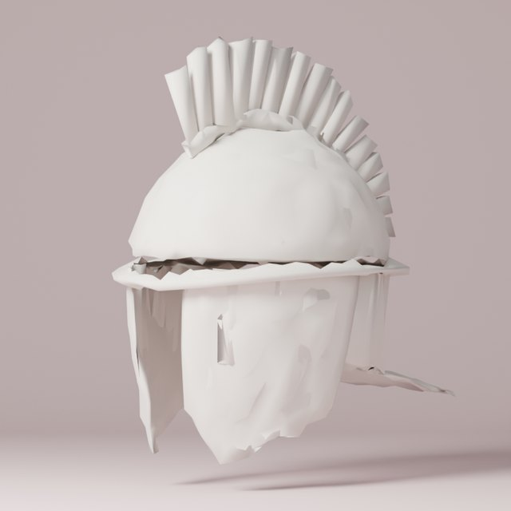
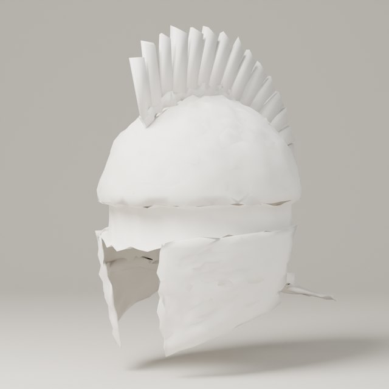
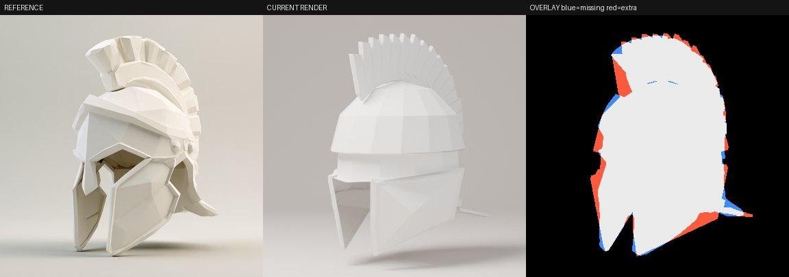
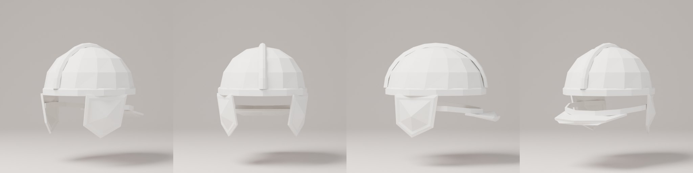

Three competing ways to rebuild one helmet from one Midjourney image, all scored by the same loss and shown from the same camera.
The hybrid won, as you bet. On the judged loss, lower is better: geometry-first scored 0.62, grammar-only 0.88, and the hybrid 0.43. The hybrid also has the best silhouette (IoU 0.91) and the closest crease structure to the reference.
It is not a faithful recreation yet. The biggest finding is why. Fitting to a single view quietly erased the very features that make this helmet what it is. The crest shrank to a thin card, the brow ledge turned inside out and the eye slot closed, because none of those things change the outline. When I made those features fixed rules that the fit can't break, the identity came back.
Every render uses the same fitted camera and the same 768 px judge (48 samples). The score is the judged total loss; lower is better.
Best render loss so far, per variant, across every rendered evaluation (384 px, 12 samples). Each experiment also ran a fast silhouette-only geometry fit before these renders; those steps are counted in the provenance file. C+rules starts from the Opus critic's edits, so its curve starts higher.
The loss scores these five crops separately, so small parts can't hide inside the whole-image average. The columns are the reference, then A, B, C and C+rules.
IoU is silhouette overlap. Landmarks is the mean error, in pixels, of 6 points (crest ends, cheek tips, neck guard, boss). Straight is the gap to the reference in how much of the crease ink lies on straight lines. Style is the gap in the distributions of gradient strength and edge coherence. Tone is colour and exposure.
A fits about 60 shape numbers to the silhouette and part crops using smooth geometry, then applies the generic paper filter the warrior used: decimate, then crumple. Before the filter, the outline is good (IoU 0.89) but the surface is smooth plastic. After it, the surface looks like wet clay, not folded paper.
In round 1 the loss actually preferred the crumpled version (0.39 down to 0.33). The style term rewarded noise because noise adds gradients, and so does the reference's faceting. That is the same blind spot you spotted on the warrior. I added a straight-crease term: what share of the edge lines lie on straight segments. The reference scores 0.66, the clean model 0.77 and the crumpled one 0.48. In round 2 the same filter costs points (0.54 up to 0.62), so the loss now agrees with your eye about noise.



B builds every part from the rules: a facet shell, hemmed plates folded from the centre, a brow ledge and folded crest blades with ridge creases. Only the pose and the rule settings were tuned, not the proportions. Square inch for square inch, it looks the most like paper, with clean planes, hems that catch light and crisp blades. But it is a generic helmet. Its silhouette IoU is 0.67 and its landmarks are 83 px off. Rules on their own reconstruct the style, not the object.
C takes A's fitted shape, rebuilds it with B's rules, and tunes both together. It has the best total (0.43), the best silhouette (0.91), and a crease structure within 0.011 of the reference. But reading its numbers shows what the optimizer traded away:
A single-view silhouette can't see depth. Anything that is mostly depth (thickness, overhang, a hole you look into) is negotiable to the optimizer, and those are exactly the features that carry the papercraft look.
I ran 5 Opus critic rounds ($0.90). Each round showed it the reference, the render and the overlay. Its diagnoses were right every time: the crest should hook forward over the brow, the forehead should be a deep V-shaped plate with a dark eye slot under it, the plates need deeper folds and raised hems, and the neck guard should flare. The loss rejected all five rounds. Applying its edits together scores 0.58 against C's 0.43. At this point the loss is the bottleneck, not the optimizer. It still pays more for pixels in the outline than for the things a person reads first.

For C+rules I restarted from the critic's edits and made the style features hard limits that the fit can't break. The crest must be at least 22% of the dome's width, the ledge must stick out, the eye slot must exist, and hems and folds must stay visible. It scores 0.47, slightly worse than the unconstrained hybrid on the loss, but it keeps a real crest and brow. This puts your "reconstruct the rules" point in concrete terms: a grammar is more than how to fold the paper. It also lists what the fit may never optimize away.
The work splits into three layers. The shape program says what the object is: about 60 numbers. The style grammar says how it's made: facets, hems, folds and blades. The invariants say what must survive the fit. The loss then needs two more things. It needs a critic's vote inside it, because Opus already sees what the pixel terms miss. And it needs more than one view, for example a Midjourney turnaround sheet, so that depth stops being free to trade away.
The mesh is generated procedurally in Blender with Python, from numbers. Nothing starts from an existing mesh. Each evaluation rebuilds the helmet from scratch: 900 to 1,000 triangles in grammar mode, and about 5,000 in smooth mode. Helmet runs took about 2 to 3 seconds per Cycles render on 4 CPU cores, and about 25 minutes of compute in total.
A crested Corinthian helmet reads as Classical Greece and early Rome. By the Gothic war (376 to 378 AD), the Roman soldier at the gate wears a ridge helmet. The Intercisa type is the common infantry helmet: two bowl halves riveted to a central ridge strip, a narrow brow band, separate cheek pieces, a small neck guard, and no crest. The Berkasovo type is the officer's version. It is heavier, with a nasal guard, and often silver-gilt sheeting. That makes it a good fit for "a helmet taken from a Roman officer" that then travels as a story object.
The grammar carries over unchanged, and only the shape numbers move. The facet shell becomes the bowl. The ridge is a folded strip, the same hemmed-strip rule the crest holder uses. The cheek pieces and neck guard are hemmed plates. The brow ledge shrinks to a narrow band. The blade stack isn't used. Below is a first pass from the same grammar and light as the hybrid, with no reference image yet, so it is a placeholder, not a fitted model. A papercraft Intercisa image from Midjourney would let it go through the same loop. For an officer's Berkasovo, the next rule to add is a nasal plate.

The code is on abbiesworld_ios, under tools/paper-helmet. The GLBs are at real-world scale (about 24 cm wide). Each has a parameter file and a provenance record. The reference is Evan's Midjourney helmet image, and the mask was cut with isnet-general-use via rembg.